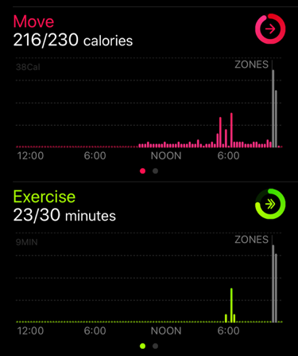
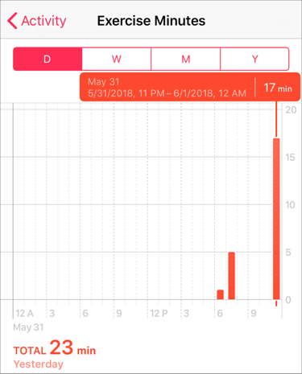

If you do workout with Zones, it will be displayed as gray bars in Apple's Activity app.

Workouts recorded by third party apps seem to be grayed out in the specification of the activity app.
The display is gray, but time for move and exercise is added.
Exercise time is calculated based on the specification of the Activity app.
There is explanation as follows in Use the Activity app on your Apple Watch
The Exercise ring shows how many minutes of brisk activity you've completed so far.
Therefore, not all time of workout will be added to the Exercise.
If exercise intensity is low (heart rate does not increase), exercise time may not increase.
If you think that the exercise time calculation is wrong, please check Calibrating your Apple Watch for improved Workout and Activity accuracy.
It is also possible to reset the calibration data.
Details of exercise time can be confirmed with Apple "Health" app.
